Analisis cientifico
Este lienzo es el artefacto mas estudiados en la historia, aunque la ciencia pudo analizarla de cerca
desde hace
mas de 100 años
Es un lienzo de lino de 441 cm de largo por 113 cm de ancho, con un peso aproximado de 1.129 kg. Esta
tejido en
forma de espina de pescado y en torcion en Z
En el año de 1898 se llevo a cabo una ostencion de la Sindone por motivo de la boda real del principe de
la Casa
de Saboya, el abogado Secondo Pia fue encargado de fotografiar por primera vez
la Sindone.

Al revelar las fotografias se percato que en el negativo se apreciaba el positivo del rostro del hombre
de la
Sindone, como si fuese una fotografia autentica de una persona.
La gente de la epoca considero como fraude los resultados de Secondo Pia, aunque desperto la curiosidad
en la
comunidad cientifica
En 1932 el fotografo Giuseppe Enrie tomo la segunda fotografia de la Sindone, validando el hallazgo de
Pia
En 1973 el palinologo suizo Max Frei tomo muestras de la Sindone con adhesivos para determinar su
procedencia.
En 1978 se creo un equipo de investigacion multidisciplinar tras descubrir un año antes la
tridimensionalidad de la imagen Sindonica
con el analizador de imagenes VP-8
 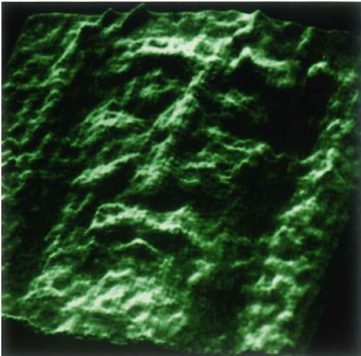
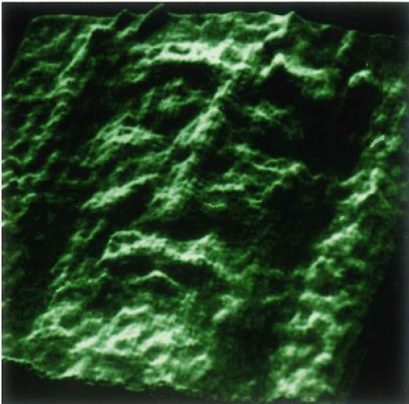

 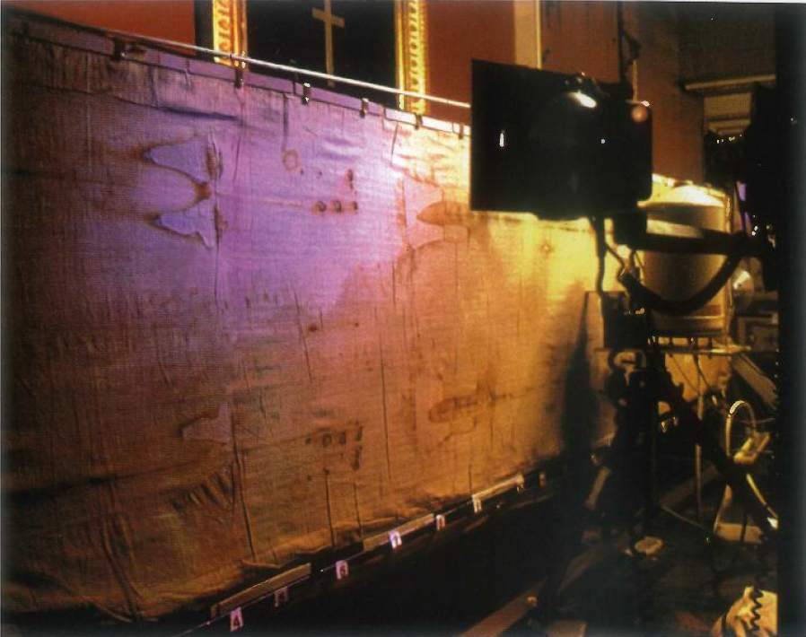
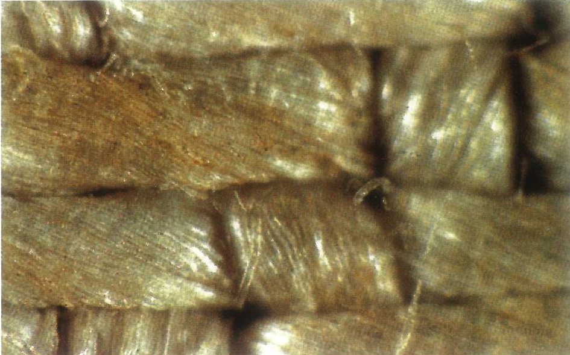
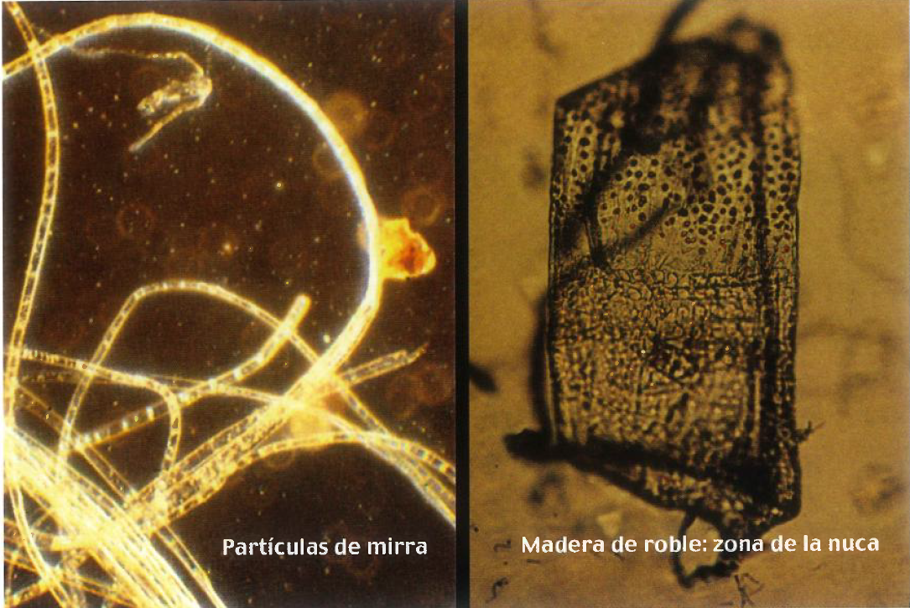
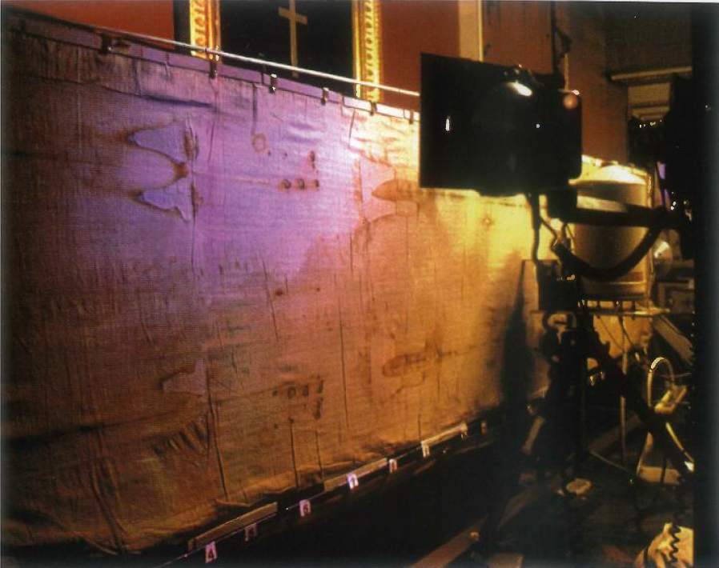
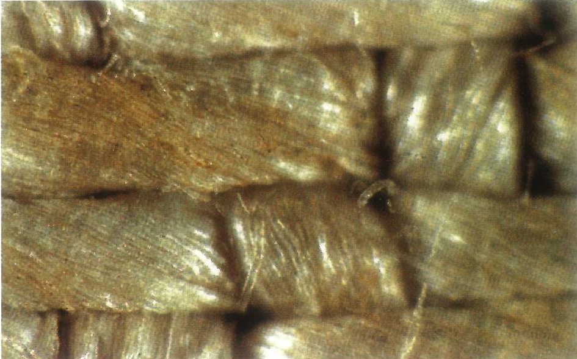
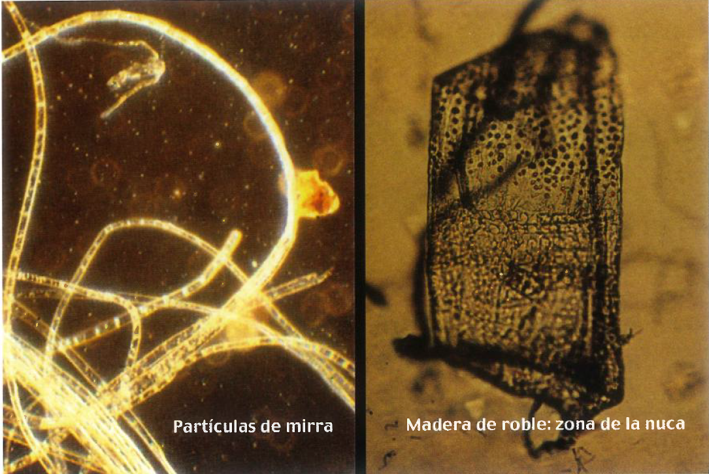
 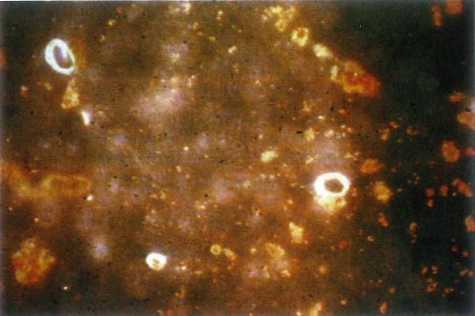
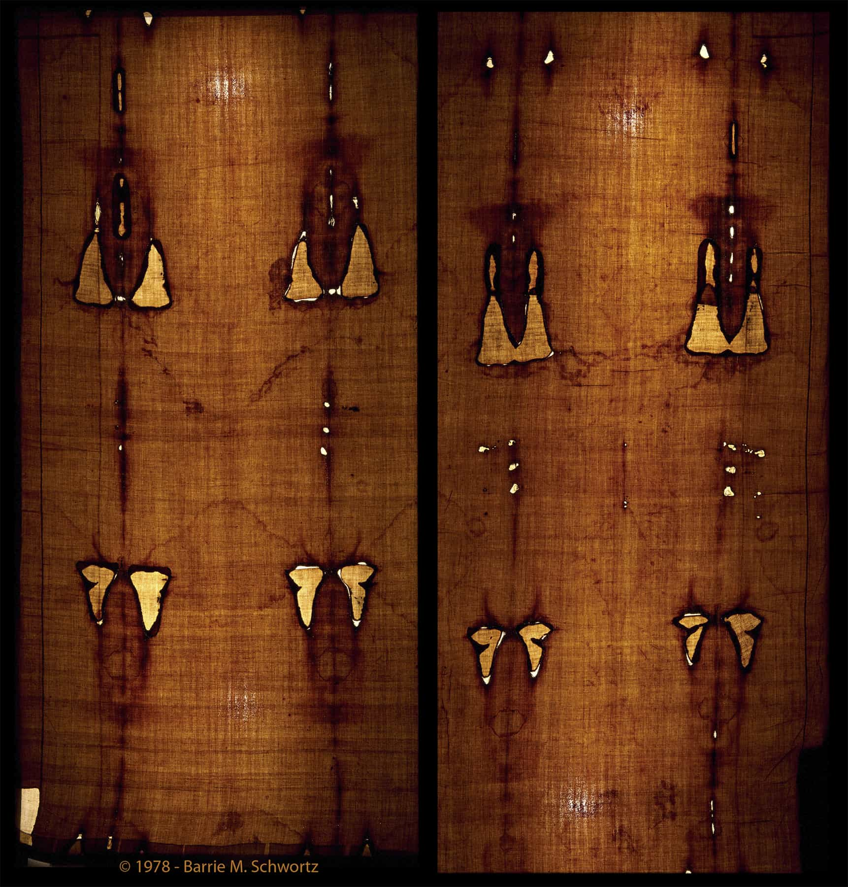
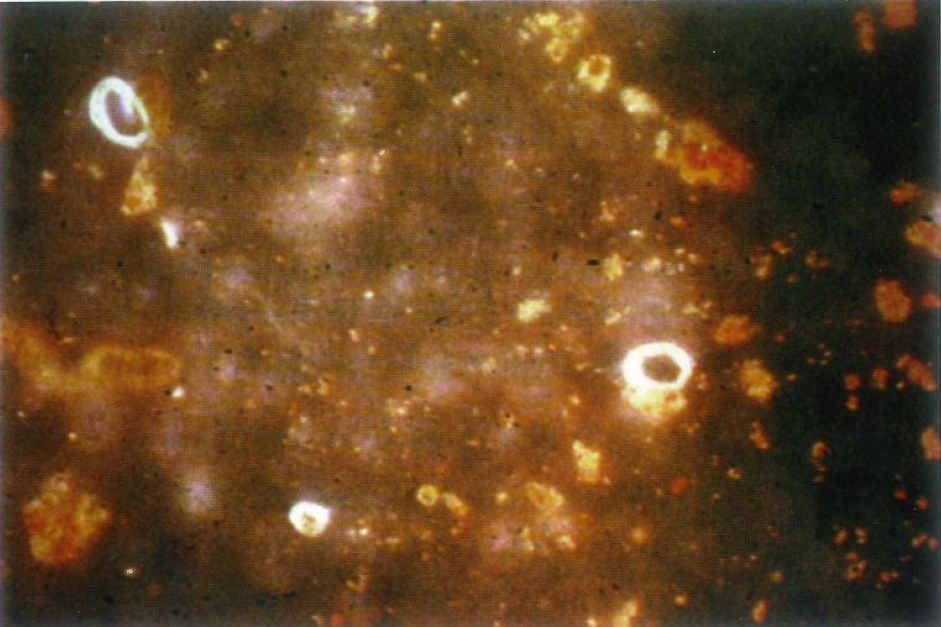
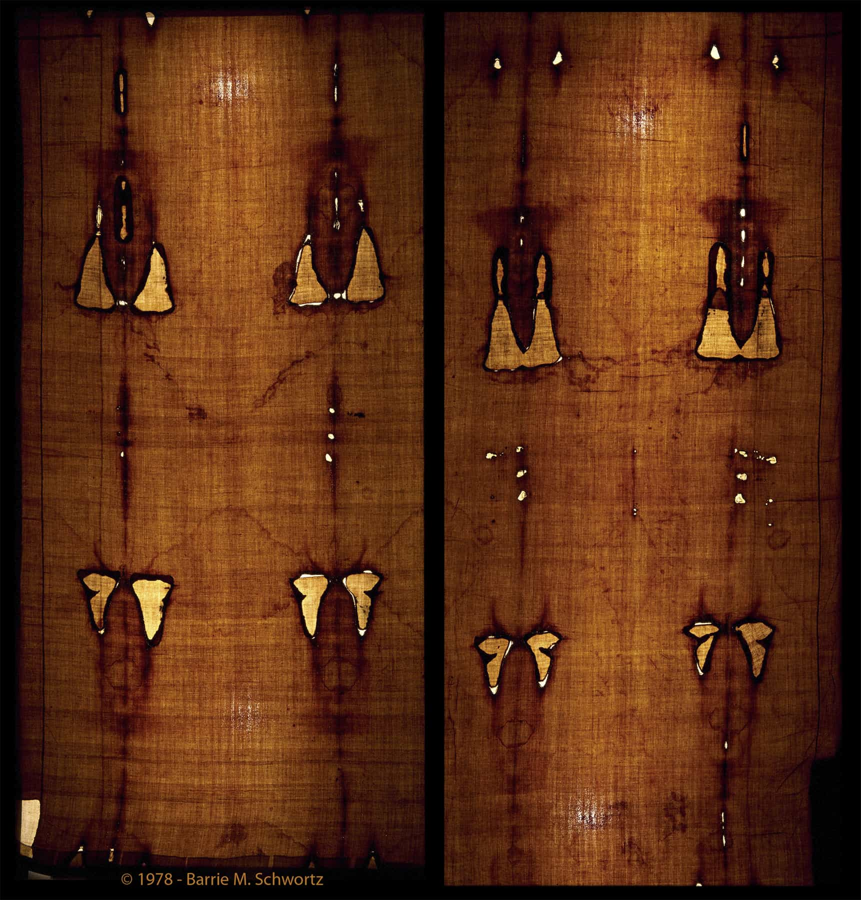
Las conclusiones fueron las siguientes: Estabilidad a altas temperaturas, estabilidad al agua, la imagen
no es
pintura sino una degradacion de la celulosa de las fibras superficiales
, la imagen no fue por contacto sino por una emanacion de luz muy potente para dejar grabada la imagen,
el
cuerpo estaba ingravido
En 1988 se realizo una datacion por el metodo de carbono-14, este proceso consiste en quemar una muestra
biologica y calcular los isotopos de carbono-14.
Tres laboratorios se encargaron de realizar dicha datacion, datandolo entre 1260 y 1390.
Sin embargo se detectaron algunas irregularidades al momento de seleccionar las muestras a datar
En el 2005 Sue Benford y Joe Marino plantearon la hipotesis de que la muestra era una mezcla del lino
orignal con tejido
de algodon teñido, una forma de remiendo en la Francia medieval, y plantearon que entre mas algodon
habia mas joven era la muestra.
Ese mismo año Ray Rogers al intentar refutar su hipotesis termino dandoles la razon analizando una de
las muestras que quedo del laboratorio de
Arizona.
En el año 2002 se le realizo una intervencion de conservacion, retirando la tela de holanda de 1534 y
los
parches de las clarisas, para poner un nuevo soporte